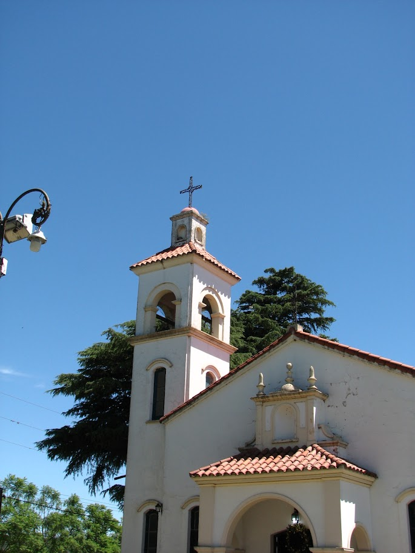
Cómo vivir la fe en lo cotidiano
Un espacio para encontrarte, crecer y compartir tu fe.
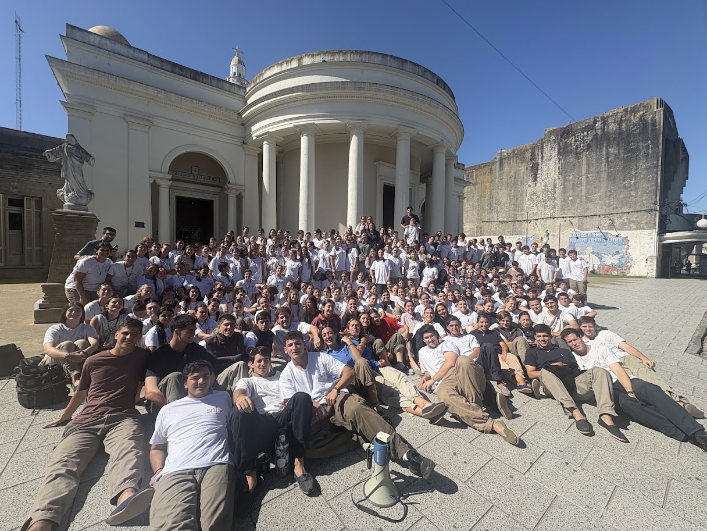

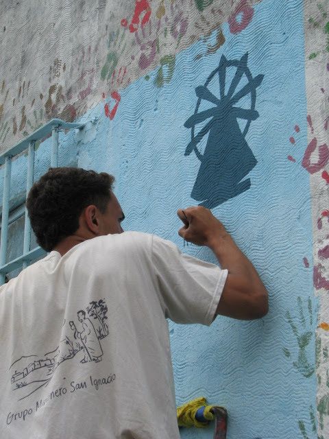
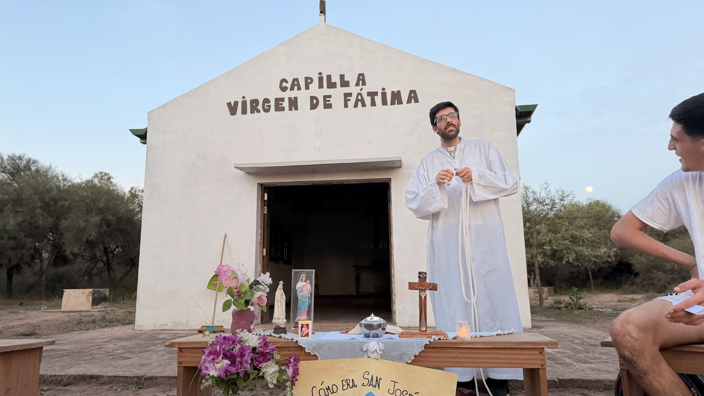
Descubrí cómo encontrar a Dios en las pequeñas cosas de cada día.
A veces pensamos que para vivir nuestra fe tenemos que hacer cosas extraordinarias. Pero la verdad es que Dios también está presente en lo más simple de nuestra vida.
En una charla con un amigo, en ayudar a alguien que lo necesita, en compartir una sonrisa o simplemente en agradecer por un nuevo día.
"Hagan todo con amor."
1 CORINTIOS 16,14Dedicá unos minutos a agradecer, rezar o simplemente hablar con Él.
Escuchá, acompañá y ayudá. Los gestos sencillos también son una forma de vivir tu fe.
Rodeate de personas que te acerquen a Dios y animate a compartir lo que vivís.
Hoy proponete hacer algo pequeño pero lleno de amor. Puede ser escuchar a alguien, ayudar sin que te lo pidan o dedicar un momento a rezar.
¡QUE TU FE SE NOTE EN TUS ACCIONES!La fe crece cuando la compartimos. Sigamos descubriendo juntos todo lo que Dios tiene para nosotros.
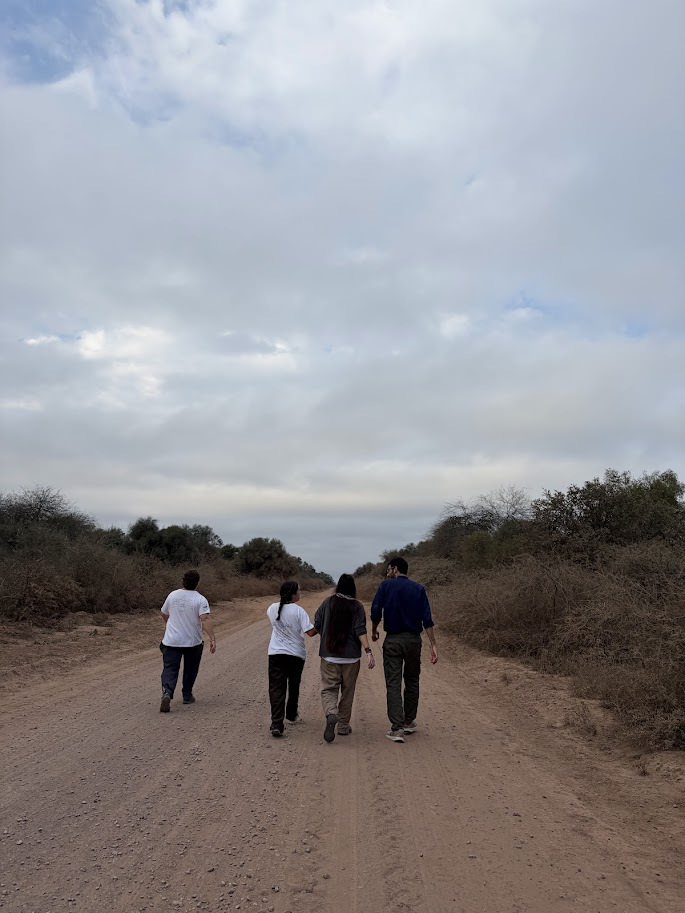
Hay encuentros que parecen casualidad, pero terminan cambiándonos la vida.
Imaginá a alguien que hacía tiempo se sentía lejos de Dios. Tenía dudas, preguntas y no sabía muy bien dónde encontrar respuestas.
Un día, un amigo lo invitó a un encuentro de jóvenes. Al principio no tenía muchas ganas de ir. No conocía a casi nadie y no sabía qué esperar.
Pero decidió animarse. Y lo que parecía una tarde más terminó siendo el comienzo de algo diferente.
A veces Dios nos encuentra a través de las personas que pone en nuestro camino.
No encontró personas perfectas. Encontró jóvenes como él: con dudas, alegrías, dificultades y ganas de crecer.
Descubrió que vivir la fe no significa tener todo resuelto, sino aprender a caminar con Dios y dejarse acompañar por otros.
Poco a poco, aquel encuentro se convirtió en un lugar donde podía ser él mismo, compartir lo que sentía y fortalecer su fe.
"Anímense y edifíquense unos a otros."
1 TESALONICENSES 5,11No hace falta tener todas las respuestas para empezar a acercarte a Dios.
La fe también crece cuando compartimos nuestras experiencias con otros.
Una invitación, una palabra o un gesto pueden hacer una diferencia enorme.
¿Alguna vez alguien te ayudó a acercarte a Dios?
¿Hay alguna persona a la que podrías invitar a compartir un momento de fe?
TU HISTORIA TAMBIÉN PUEDE INSPIRAR.En RONDA creemos que cada encuentro es una oportunidad para crecer, compartir y descubrir a Dios en nuestra vida.
Encontrá un espacio para rezar, reflexionar y fortalecer tu fe cada día.
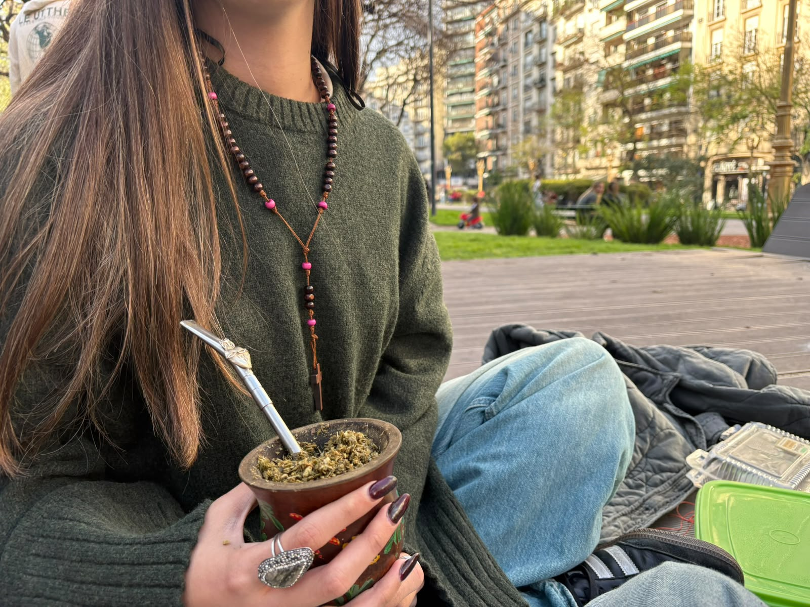
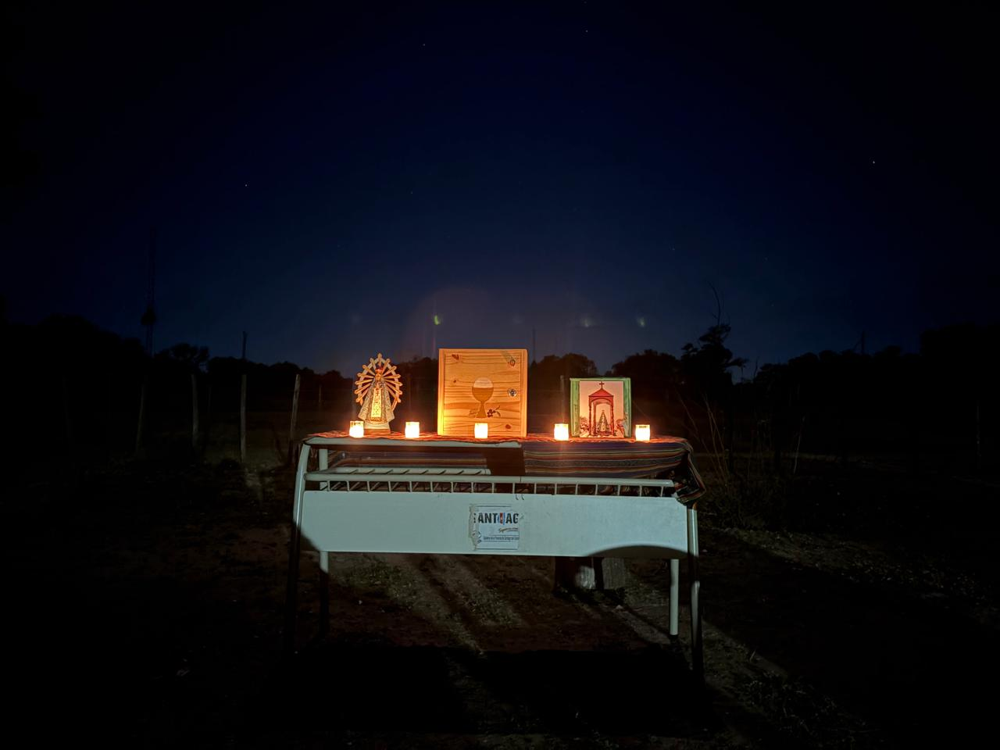
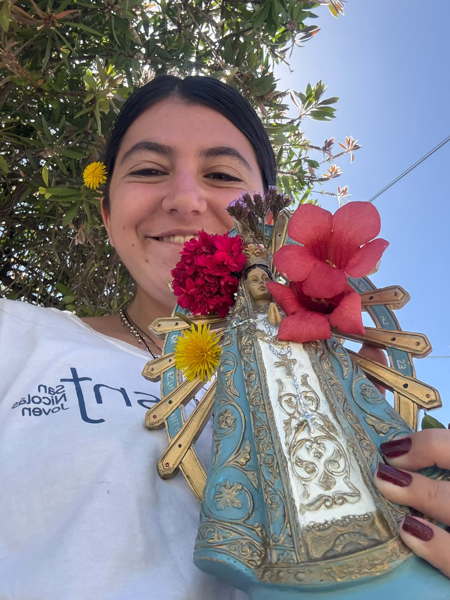
Dale gracias por todo lo bueno de tu vida.
Terminá el día en sus manos.
Conectá con jóvenes que comparten tu fe y descubrí nuevas experiencias en comunidad.
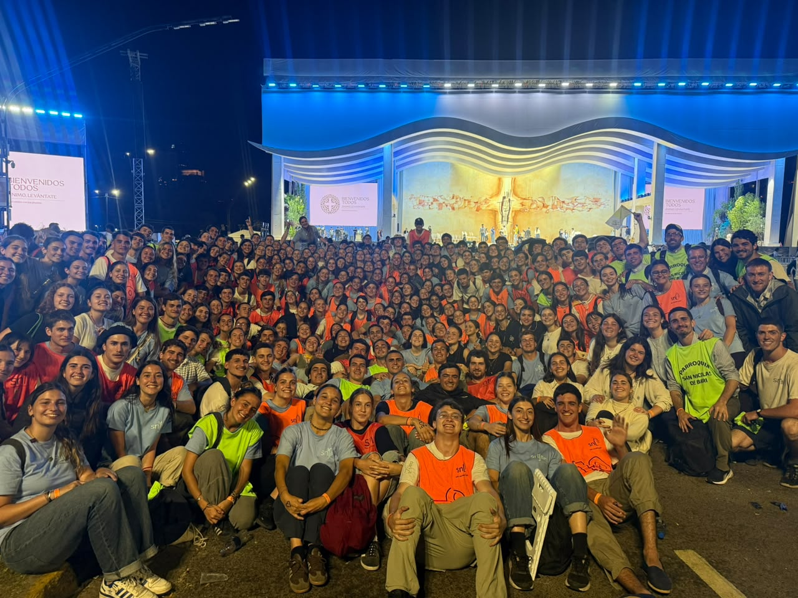
📅 12 OCT
◷ 19:00 hs
📍 Parroquia San José
Contenidos que te ayudan a conocer, comprender y vivir la fe en tu día a día.
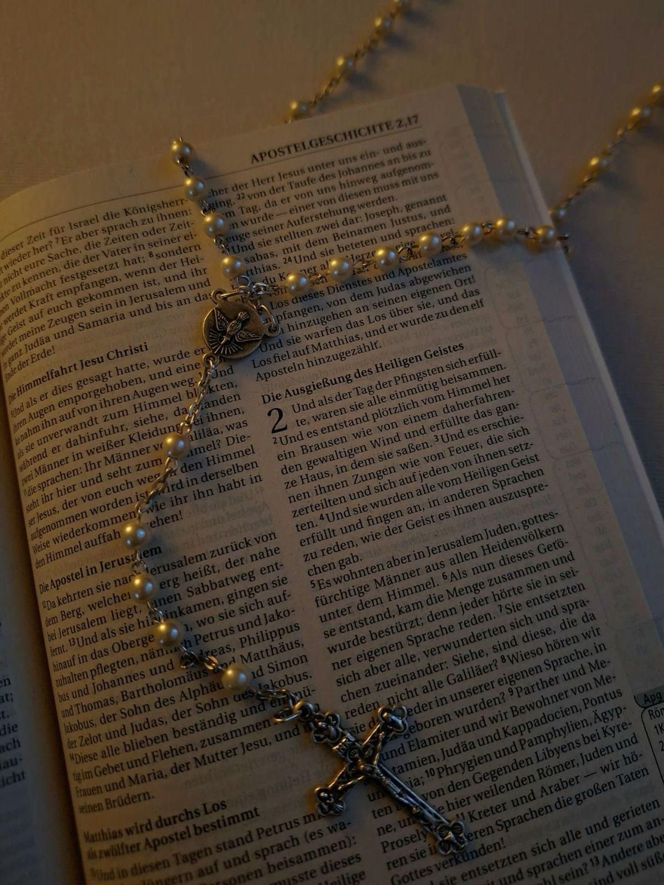
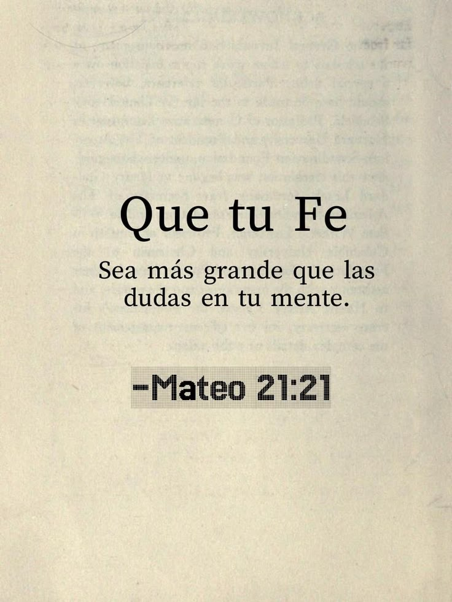
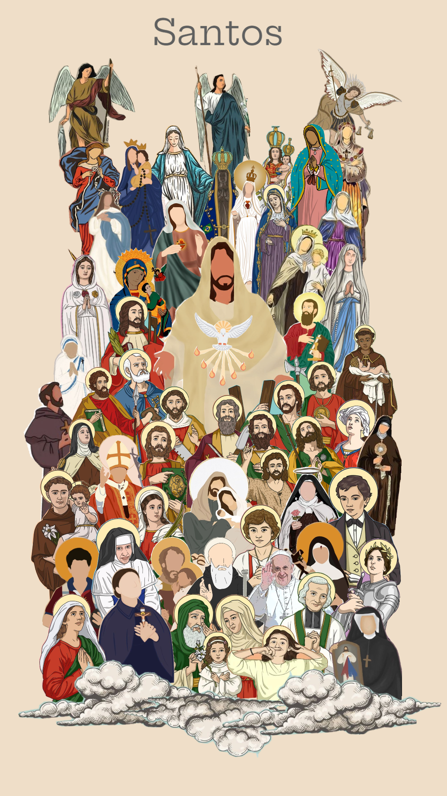
Canciones que inspiran, acompañan y nos unen a través de la fe.
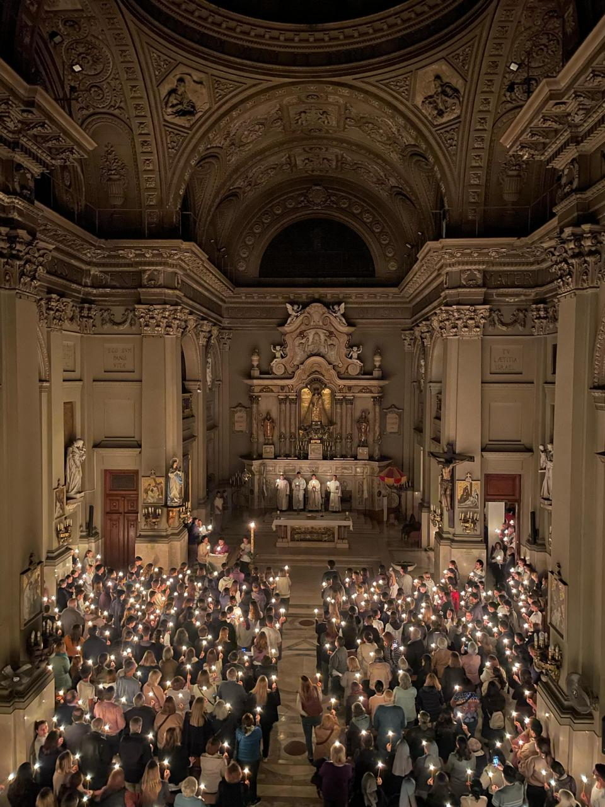
Canciones para rezar, reflexionar y encontrar paz.


Descubrí los próximos encuentros, actividades y eventos para compartir tu fe.
19:00 hs · Parroquia San José
20:00 hs · Catedral
10:00 hs · Barrio San Martín